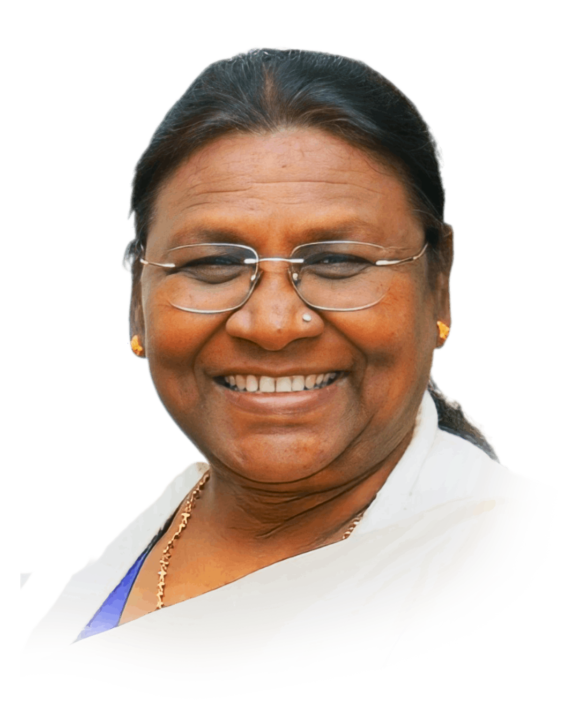

Droupadi Murmu
15th President of India
"I will focus on welfare of the marginalised."
Biography
Droupadi Murmu is an Indian politician who became the 15th president of India on 25 July 2022. She is the first person belonging to the tribal community and the second woman after Pratibha Patil to hold the office. She served as the governor of Jharkhand from 2015 to 2021 and has also been a member of the Legislative Assembly from Odisha and a minister of state of the Government of Odisha. Before entering politics, she worked as a clerk in the State Irrigation and Power Department and later as a teacher. Murmu was born in 1958 to a Santali family in Odisha, India, and her father was a farmer. She graduated from Rama Devi Women's College and later married Shyam Charan Murmu, with whom she had two sons and a daughter. However, her husband, two sons, mother, and a brother all died in a span of 7 years, from 2009 to 2015. Murmu is a follower of the Brahma Kumaris spiritual movement.